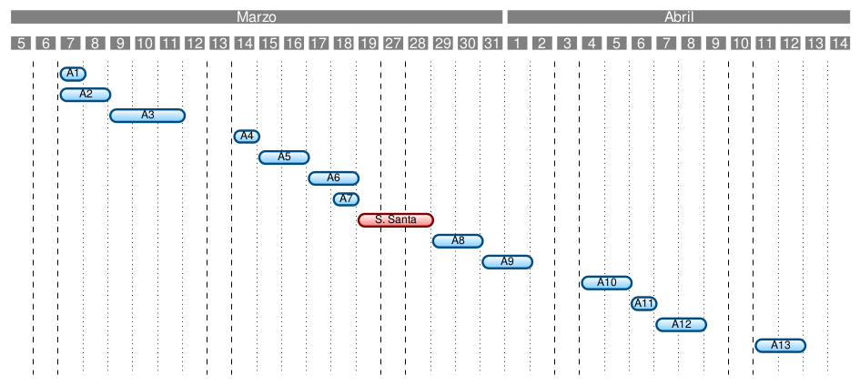
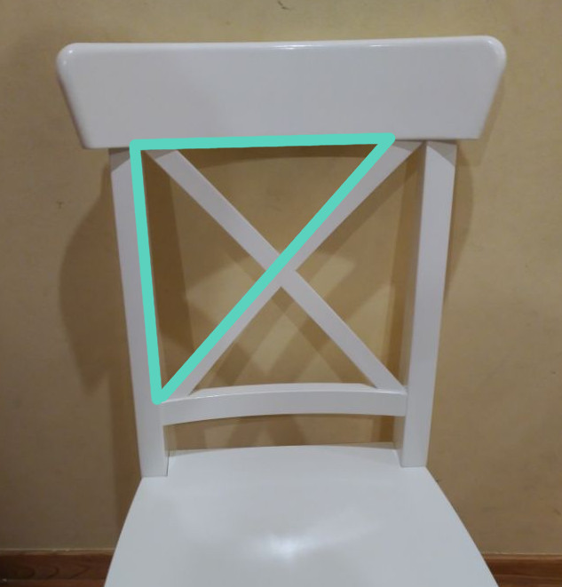

Mestrado en Profesorado de Educación Secundaria Obrigatoria e Bacherelato, Formación Profesional e Ensinanaza de Idiomas
Unidade didáctica: “Figuras xeométricas planas. Concepto e propiedades.”
| Alumno: | Chavarría Teijeiro, Marcos |
|---|---|
| Especialidade: | Matemáticas |
| Titora: | Pérez González, Mercedes |
Índice
1. Fundamentación teórica
2. Desenvolvemento
3. Conclusións e reflexións
F. Psicolóxica
Pubertade e adolescencia
Desenvolvemento Cognitivo
Personalidade
Aprendizaxe
F. Pedagóxica
Aprendizaxe por recepción e colaborativo
Papel do profesor
Elementos reais nas matemáticas
Modelos de Van Hiele
F. Sociolóxica
Escola como igualadora
Tolerancia
Coñecemento da cultura propia
Cidadanía crítica
Desenvolvemento
Contexto
F. temática e xust. curricular
Actividades
Diversidade
Valoración da Aplicación
Contexto
IES Leiras Pulpeiro (Lugo)
Aula → 18 estudantes
Bo rendemento e comportamento
Fund. Temática
Xeometría no día a día
Xust. Curricular
Comp. Clave • Contidos • Metodoloxía • Obxectivos da ESO
Actividades
Blogue
Act. 0: Fotografía

Act. 1: Que é a xeometría?
Act. 2: Puntos, rectas e planos

Act. 3: Ángulos

Act. 4: Mediatriz e Bisectriz
Act. 5: Exame
Act. 6: Polígonos. Triángulos
Act. 7: Suma ángulos do triángulo
Act. 8: Puntos e rectas notables

Act. 9: Th. Pitágoras
Act. 10: Cuadriláteros